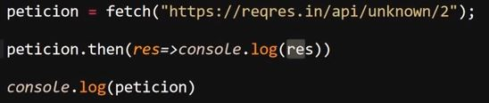
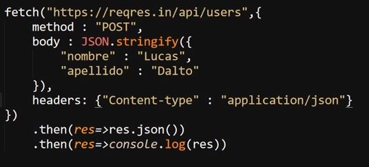

Se trata de la forma actual de trabajar con el objeto "XMLHttpRequest", de hecho se trata del remplazo de AJAX como metodo para trabajar con las consultas, debido a lo reciente que es y el tiempo que paso "AJAX" como el metodo estandarizado para trabajar con las peticiones, el metodo "fetch" aun no se puede considerar el más utilizado, sin embargo si el metodo recomendado actualmeten.
Este metodo se basa en promesas para realizar las peticiones, por lo tanto la respuesta de estas se recibe en forma de una promesa encapsulada, una promesa encapsulada es aquella cuyos datos se encuetran encapsulados, razon por la cual el objeto "fetch" posee dibersos metodos para combertir el tipo de datos a uno que sea valido para su uso.
Lo que hace superior a fetch sobre AJAX es lo sorprendenetemente reducida y simple que es la sintaxis de las peticiones, ya que este metodo requiere que se definan muchos menos aspectos que los metodos anteriores, tanto es así que incluso tiene el metodo GET definido como el metodo por defecto, razon por la cual nisiquiera es necesario declararlo salvo que se desee usar otro.
A continuación se muestra un ejemplo sobre como inicializar la petición con "fetch", en la cual en una sola linea de codigo se hace el equivalente a declarar el objeto "XMLHttpRequest" (incluyendo la version de internet explorer), definir el metodo (Get por defecto) y se indica la dirección a la que se realizara la consulta.
Ejemplo
De estas forma el metodo "fech" reduce significatibamente las lineas de codigo y los datos necesarios para operarlo, por su parte debido a que la promesa se encuetra encapsulada se necesita de utilizar el metodo ".then" para definir que acción aplicarle:
Ejemplo

En este ejemplo se busca obtener la promesa para imprimirla en pantalla, debido a que se encuesta encapsulada se utiliza el metodo ".then" el cual permite ejecutar una acción después de que la promesa se resuelva y encadenar acciones que deben ser realizadas en secuencia, en este caso se usa para aplicar una función flecha, la cual se le pasa la promesa como dato en la variable "res" y luego se imprime en consola.
Por otro lado para obtener los datos retornados dentro la promesa primero es necesario desencapsularla, para esto se utilizal el metodo ".text()", el cual retorna los datos desencapsulados:
Ejemplo
En este ejmeplo se utiliza dos veces la propiedad ".then", en la primera ocación se usa para emplear la propiedad ",text" la cual retorna la promesa des-encapsulada en formato de texto, y una vez ya la se puede acceder a la promesa se usa una segunda vez para imprimirla en pantalla.
"fetch" es tan versatil que incluso se puede resumir el codigo aun más, ya que no es necesario que se declaren variables para su uso.
Ejemplo
De esta forma en un conjunto muy reducido de lineas se puede declarar una petición, obtener una promesa como resultado y acceder a los datos encapsulados en esta, sin embargo el metodo ".text" unicamete retorna los datos en tipo cadena de texto, debido a esto existen otros metodos que permiten retornar los datos de otras formas:
-
.JSON( ): Se trata del metodo que permite retornar los datos en formato JSON para su uso, este metodo por si mismo permite deserializar el objeto a la vez que lo des-encapsula.
Nota: Este segundo codigo arrojaria el mismo resultado pero no utilizaria el metodo ".JSON" el cual es recomendado
-
.Blob( ): Se trata de un metodo que permite crear objeto "blob" los cuales son objetos que permiten manipular objetos vinarios inmutables como por ejmeplo fotos, videos, audio entre otros, en otras palabras este metodo permite crear un onjeto especial para manipular elementos multimedia, por lo tanto el metodo ".blob" permite enviar elementos multimedia con "fetch"
En este ejemplo se selecciona un div HTML con la variable "imagen", luego se usa "fetch" para obtener la imagen(simula una dirección), se usa ".then" con ".blob( )" para crear el objeto "blob" y poder manipular la imagen, y por ultimo se toma la variable "imagen" (div), se usa el metodo "src" para vincular una dirección url y por ultimo se iguala al url generado por el metodo ".createObjectURL" del objeto "url", el cual crea una url temporal para alojar el objeto "blob" y poder visualizar la imagen.
En otras palabras en este ejemplo se accede a la imagen que podra estar ubicada en x dirección, se crea el objeto "blob" correspondiente para su manipulación y luego se inserta en el contenedor HTML.
Hacer un Envio POST con Fetch
Para generar un envio de datos del metodo POST se añaden varios datos en relaciones nombre/valor a la declaración del "fetch":
-
El primer dato siempre debe ser la dirección a la que se realizara el envio, este dato no posee un identificador, solo se define su valor
-
Como segundo dato se añade el metodo del envio, el cual se identifica con la palabra "method", seguido del nombre metodo a utilizar, en este caso "POST"
-
EL tercer dato corresponde al cuerpo del envio, es decir a los datos que estan siendo envaidos, en este caso un objeto JSON, esta parte del envio se identifica con el nombre "body" (JSON.stringify() permite seriealizar el objeto JSON para su envio)
-
Como ultimo dato se añade los "headers" del envio, los cuales le indican al servidor el tipo de contenido que se esta enviando, por lo cual estos dependen del tipo de información que se este enviando

De esta forma se realiza un envio de datos "POST" con "fetch".
Nota: Si el JSON del "body" es bastante reducido se puede ovia el "JSON.stringify()" y se puede remplazar con bactips (``) de la siguite forma:
Nota: Una alternativa de estructura más recomendable es almacenar todos los datos del envio (a excepción de la dirección) en una variable y llamarla al definir "fetch", ya que esto permite mejorar la legibilidad del codigo: